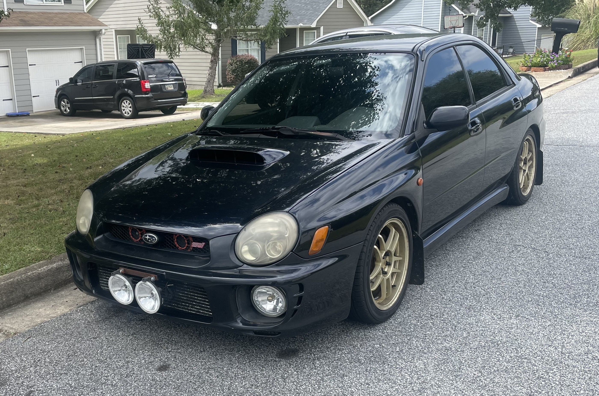
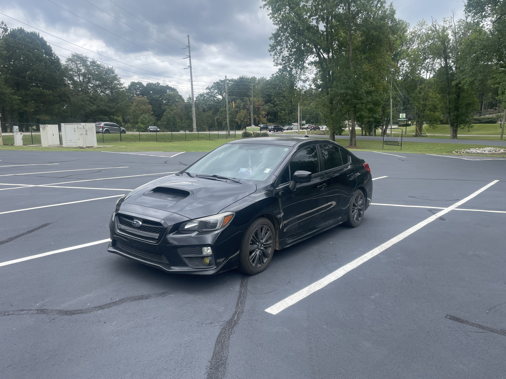
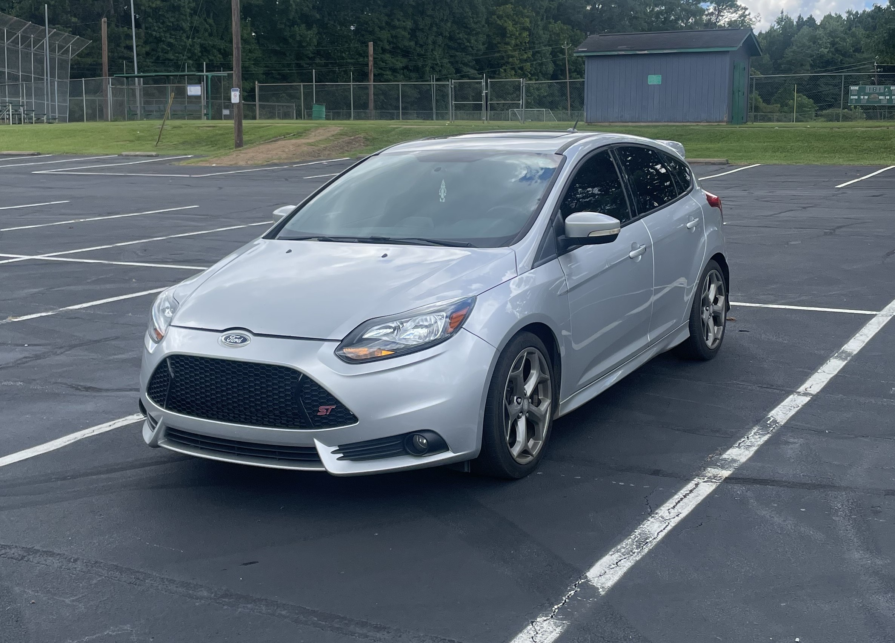
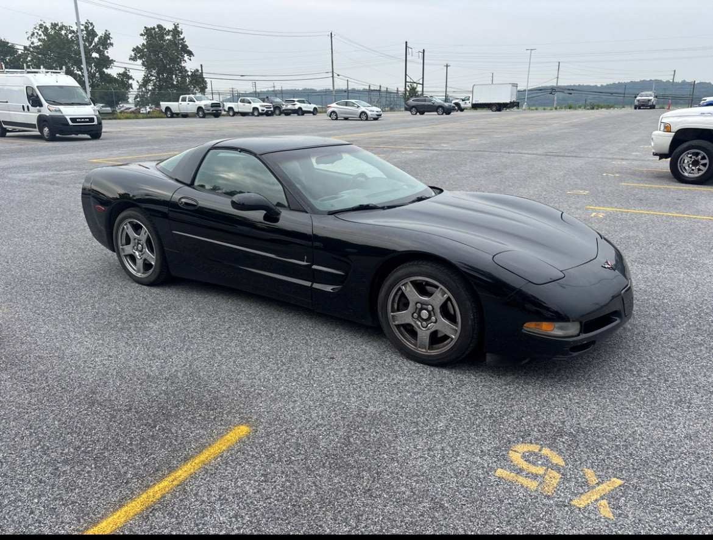
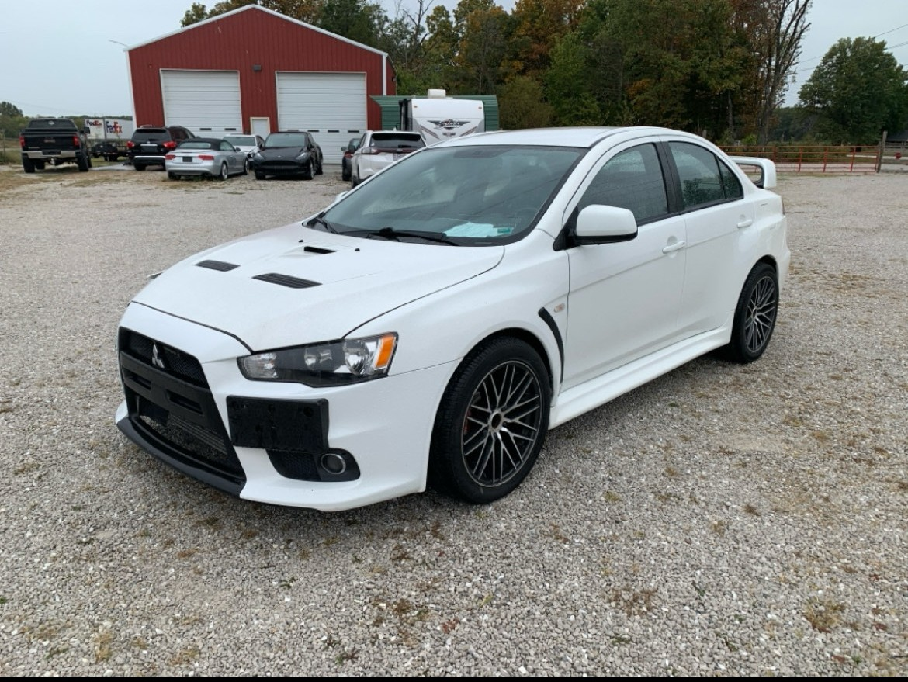

2002 WRX

BUILDER: Jonathan Paniagua
Build Type: Street / Daily
Completion: 50%
A project find performance upgrades.
Stage 2+ daily driver . Currently making 300 WHP with plans for E85 conversion.
car enthusiasts sharing their builds, modifications, and automotive journeys. Browse thousands of build thread.
Check out these incredible builds from our community members.

BUILDER: Jonathan Paniagua
Build Type: Street / Daily
Completion: 50%
A project find performance upgrades.
Stage 2+ daily driver . Currently making 300 WHP with plans for E85 conversion.

Builder: Jonathan Paniagua
Build Type: Daily
Completion: Ongoing
Lightly modified

Builder:Jonathan Paniagua
Build Type:Daily
Completion: 80% (OEM+ Build)
Budget-friendly Focus St Project, from $3,500 Facebook Marketplace project to a reliable car.

Builder: Jonathan Paniagua
Build Type: Street
Completion: 60%
Cammed ls1 Clean title, original paint, all documentation since new.

Builder: Jonathan Paniagua
Build Type: Street
Completion: 90%
track weapon. Currently making 500 WHP with plans for E85 conversion and bigger turbo.
See what the community have been working on this week.
January 30, 2025: Just installed New TE37 Wheels. The Wheels are finally adjusted, now its time for the suspension.
January 29, 2025: Big turbo is DONE! Swapped out the factory turbos for a AGT 3070 with a custom manifold. Dyno day tomorrow hopefully 650+ WHP.
January 28, 2025:The E85 kit finally arrived. Did a test fit last night everything looks like it'll bolt up perfectly. Planning to start the install this weekend.
January 28, 2025:Since I noticed that I did new spark plugs, changed transmission fluid/rear differential fluid. Any recommendations on basic maintenance to keep my car alive for as long as I can?
THE BUILDS isnt only a website it's also a community of car enthusiasts helping each other build better cars.
Ready to share your build? We'd love to see your project.
(General Inquiries, Build Submissions)